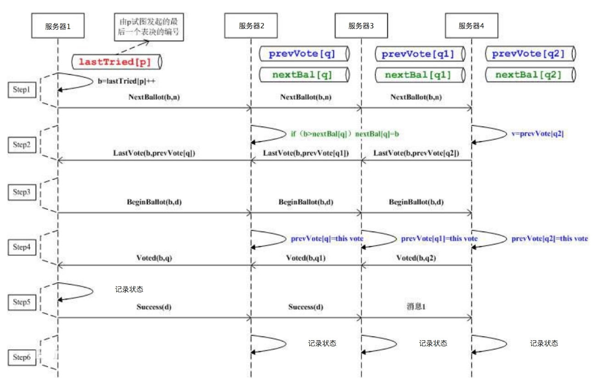
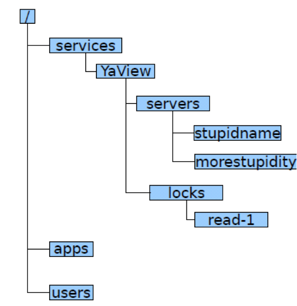
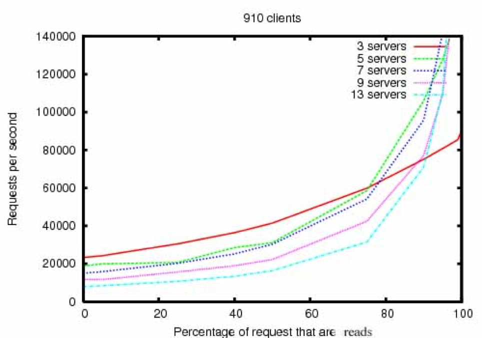

16 | ZooKeeper是如何保证数据一致性的
你可能还记得，我们在讲 HDFS 和 HBase 架构分析时都提到了 ZooKeeper。在分布式系统里的多台服务器要对数据状态达成一致，其实是一件很有难度和挑战的事情，因为服务器集群环境的软硬件故障随时会发生，多台服务器对一个数据的记录保持一致，需要一些技巧和设计。
这也就是我们今天要讨论的分布式系统一致性与 ZooKeeper 的架构。
在讲分布式系统一致性前，我们先回顾一下 HDFS。HDFS 为了保证整个集群的高可用，需要部署两台 NameNode 服务器，一台作为主服务器，一台作为从服务器。当主服务器不可用的时候，就切换到从服务器上访问。但是如果不同的应用程序（Client）或者 DataNode 做出的关于主服务器是否可用的判断不同，那么就会导致 HDFS 集群混乱。
比如两个应用程序都需要对一个文件路径进行写操作，但是如果两个应用程序对于哪台服务器是主服务器的判断不同，就会分别连接到两个不同的 NameNode 上，并都得到了对同一个文件路径的写操作权限，这样就会引起文件数据冲突，同一个文件指向了两份不同的数据。
这种不同主服务器做出不同的响应，在分布式系统中被称作“脑裂”。光看这个词你也可以看出问题的严重性，这时候集群处于混乱状态，根本无法使用。那我们引入一个专门进行判断的服务器当“裁判”，让“裁判”决定哪个服务器是主服务器不就完事了吗？
但是这个做出判断决策的服务器也有可能会出现故障不可访问，同样整个服务器集群也不能正常运行。所以这个做出判断决策的服务器必须由多台服务器组成，来保证高可用，任意一台服务器宕机都不会影响系统的可用性。
那么问题又来了，这几台做出判断决策的服务器又如何防止“脑裂”，自己不会出现混乱状态呢？有时候真的很无奈，分布式系统设计就像是一个追着自己尾巴咬的喵喵，兜兜转转回到开头。
但是问题必须还要解决，我们比较常用的多台服务器状态一致性的解决方案就是 ZooKeeper。
比如一个提供锁服务的分布式系统，它是由多台服务器构成一个集群对外提供锁服务，应用程序连接到任意一台服务器都可以获取或者释放锁，因此这些服务器必须严格保持状态一致，不能一台服务器将锁资源交给一个应用程序，而另一台服务器将锁资源交给另一个应用程序，所以像这种分布式系统对数据一致性有更高的要求。
Paxos 算法就是用来解决这类问题的，多台服务器通过内部的投票表决机制决定一个数据的更新与写入。Paxos 的基本思路请看下面的图。

应用程序连接到任意一台服务器后提起状态修改请求（也可以是获得某个状态锁的请求），从图上看也就是服务器 1，会将这个请求发送给集群中其他服务器进行表决。如果某个服务器同时收到了另一个应用程序同样的修改请求，它可能会拒绝服务器 1 的表决，并且自己也发起一个同样的表决请求，那么其他服务器就会根据时间戳和服务器排序规则进行表决。
表决结果会发送给其他所有服务器，最终发起表决的服务器也就是服务器 1，会根据收到的表决结果决定该修改请求是否可以执行，从而在收到请求的时候就保证了数据的一致性。
Paxos 算法比较复杂，为了简化实现，ZooKeeper 使用了一种叫 ZAB（ZooKeeper Atomic Broadcast，ZooKeeper 原子消息广播协议）的算法协议。基于 ZAB 算法，ZooKeeper 集群保证数据更新的一致性，并通过集群方式保证 ZooKeeper 系统高可用。但是 ZooKeeper 系统中所有服务器都存储相同的数据，也就是数据没有分片存储，因此不满足分区耐受性。
ZooKeeper 通过一种树状结构记录数据，如下图所示。

应用程序可以通过路径的方式访问 ZooKeeper 中的数据，比如 /services/YaView/services/stupidname 这样的路径方式修改、读取数据。ZooKeeper 还支持监听模式，当数据发生改变的时候，通知应用程序。
因为大数据系统通常都是主从架构，主服务器管理集群的状态和元信息（meta-info），为了保证集群状态一致防止“脑裂”，所以运行期只能有一个主服务器工作（active master），但是为了保证高可用，必须有另一个主服务器保持热备（standby master）。那么应用程序和集群其他服务器如何才能知道当前哪个服务器是实际工作的主服务器呢？
所以很多大数据系统都依赖 ZooKeeper 提供的一致性数据服务，用于选举集群当前工作的主服务器。一台主服务器启动后向 ZooKeeper 注册自己为当前工作的主服务器，因此另一台服务器就只能注册为热备主服务器，应用程序运行期都和当前工作的主服务器通信。
如果当前工作的主服务器宕机（在 ZooKeeper 上记录的心跳数据不再更新），热备主服务器通过 ZooKeeper 的监控机制发现当前工作的主服务器宕机，就向 ZooKeeper 注册自己成为当前工作的主服务器。应用程序和集群其他服务器跟新的主服务器通信，保证系统正常运行。
因为 ZooKeeper 系统的多台服务器存储相同数据，并且每次数据更新都要所有服务器投票表决，所以和一般的分布式系统相反，ZooKeeper 集群的性能会随着服务器数量的增加而下降。

ZooKeeper 通过 Paxos 选举算法实现数据强一致性，并为各种大数据系统提供主服务器选举服务。虽然 ZooKeeper 并没有什么特别强大的功能，但是在各类分布式系统和大数据系统中，ZooKeeper 的出镜率非常高，因此也是很多系统的基础设施。
如果我们单独看大数据和分布式系统的很多解决方案，如果不把它们放在大规模数据和大规模服务器集群的场景下思考，可能会觉得很多问题和方案都很莫名其妙。比如要保证分布式系统中数据的一致性，才诞生了 Paxos 这样专门的算法和 ZooKeeper 这样的产品。
Paxos 算法只考虑所有服务器都是可信任的情况。但在分布式系统中还有一类场景，需要考虑当集群中的服务器存在恶意服务器的情况。当这些恶意服务器企图篡改伪造数据，或者传递虚假信息的时候，如何保证系统继续有效运行呢？比如目前非常火的区块链，就需要考虑这种场景。
区块链采取的解决方案是工作量证明。一台服务器要想在分布式集群中记录数据（即所谓分布式记账），必须进行一个规模庞大的计算，比如计算一个 256 Bit 的 hash 值，这个值的前若干位必须为 0。比特币区块链就是采用类似这样的工作量证明算法，为了进行这样的 hash 计算，目前比特币区块链消耗的电量相当于一个中等规模国家的用电量。
通过这种工作量证明方式，保证了恶意服务器要想伪造篡改数据，必须拥有强大的计算能力（占整个集群服务器计算能力的 51% 以上），而只要我们认为大多数服务器是善意的，那么这样的区块链分布式集群就是可靠的。
除了工作量证明，还有什么方法可以保证分布式系统中不可信任的机器无法篡改或伪造数据？